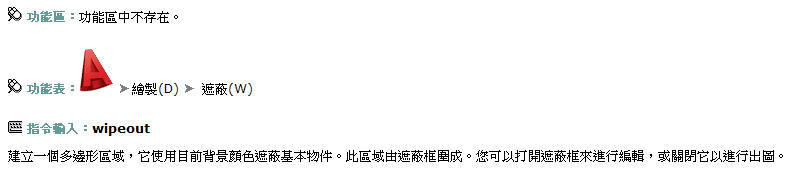
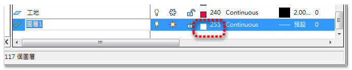
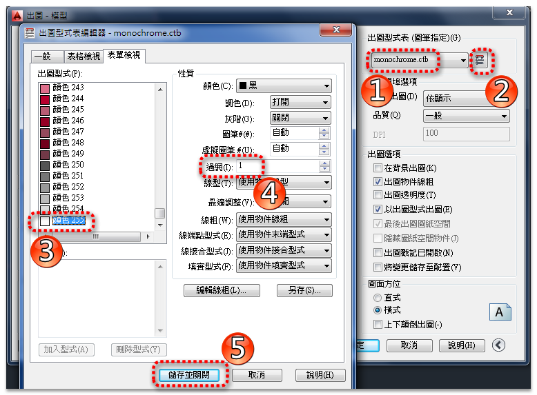
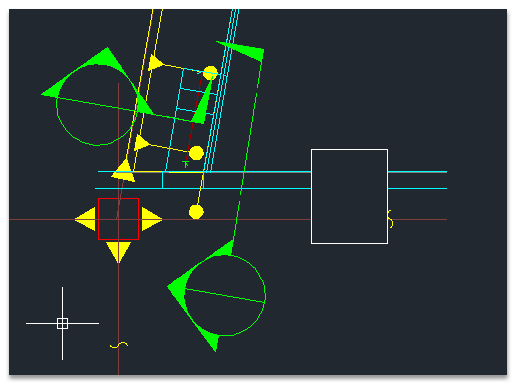
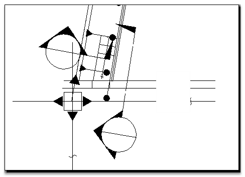

AutoCAD並沒有 背景不透明 的功能，但是可以使用 遮蔽 WIPEOUT指令；使用空白區域覆蓋既有的物件，來達到你要的效果。
*建議將 紅色"computer system"方塊 製作為圖塊，將來比較好修改及管理。
使用遮蔽物件以空白區域覆蓋既有物件，可以騰出空間供註解使用或遮蔽詳細資料。
遮蔽物件是一個多邊形區域，可以使用目前背景顏色遮蔽底層物件。本區域由遮蔽框包圍，您可以打開此框進行編輯，關閉此框進行出圖。

動態操作如下：
如果在文字上的使用，要有遮蔽的效果可以使用 多行文字 的遮罩功能：
若是要使用在 屬性圖塊 ，可能就需要一點技巧運用，可以參考以下的文章:
使用的指令:ATTDEF、BLOCK、WIPEOUT、DRAWORDER、INSERT、PLOT
如果「遮蔽框線」不想要列印，可以把遮蔽框線的「圖層顏色」指定為「255」號色即可。
或者輸入WIPEOUTFRAME系統變數，設定為 2 (可見不可出圖)。
※補充圖層顏色255號色作法：
步驟1：新增「遮蔽」專屬圖層，顏色指定255號色

步驟2：出圖圖筆設置，將255號色的 過網(墨水量) 改為 1

步驟3：CAD中可見

步驟4：出圖時即可不可見

延伸閱讀 >> [知識]關於AutoCAD 的遮蔽(wipeout)指令